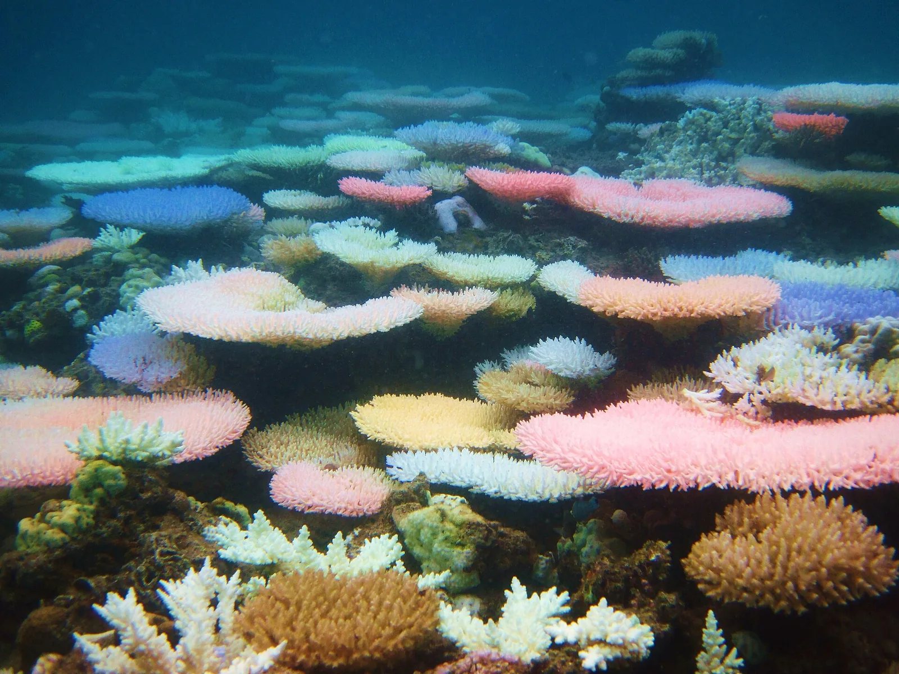
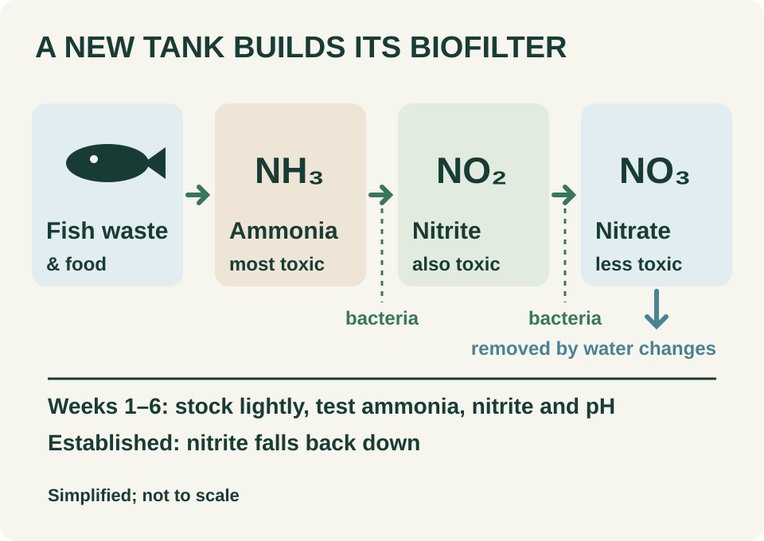
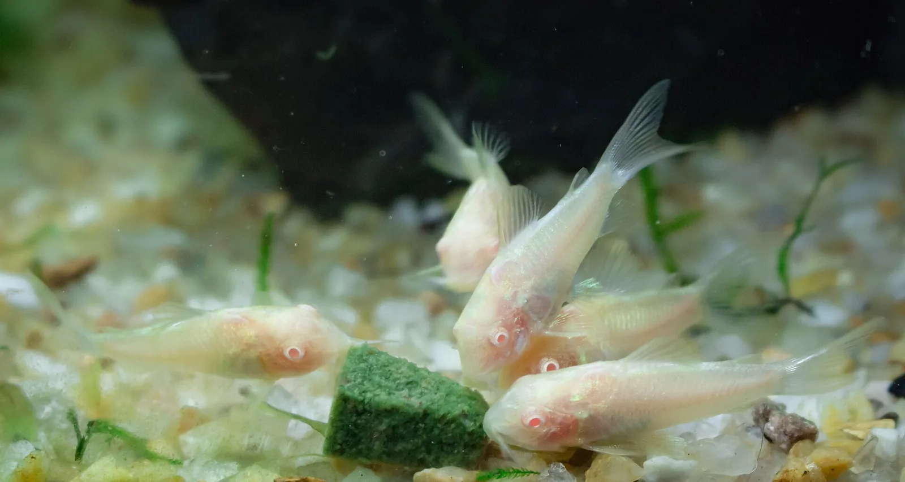
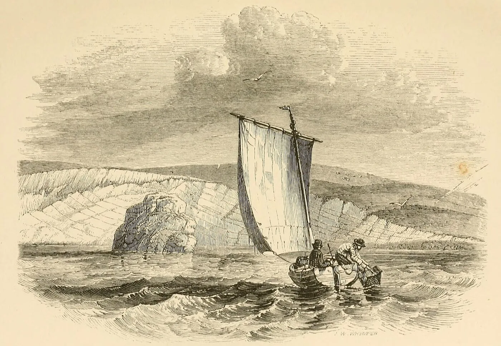
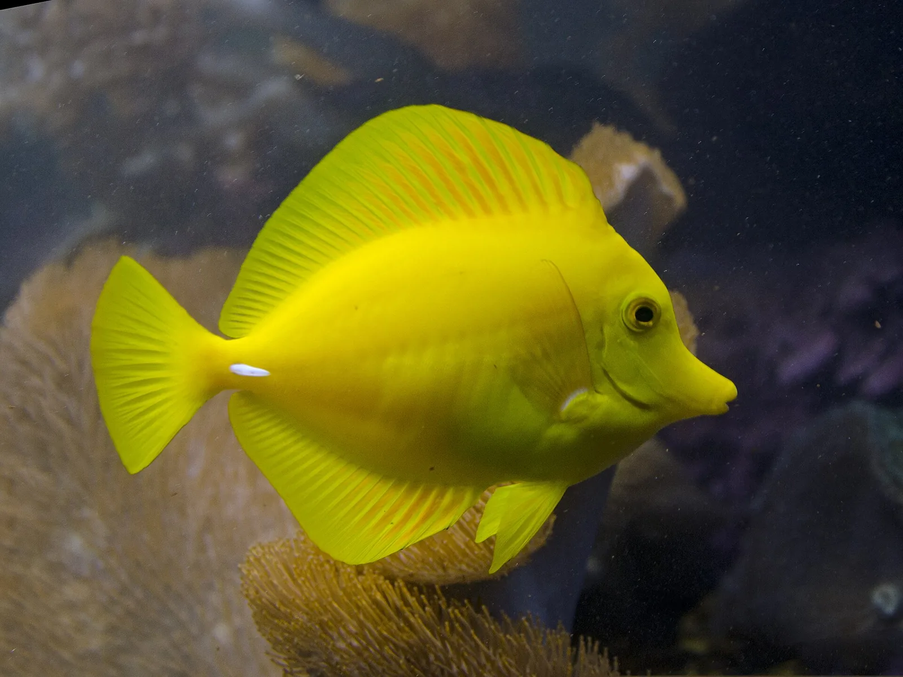
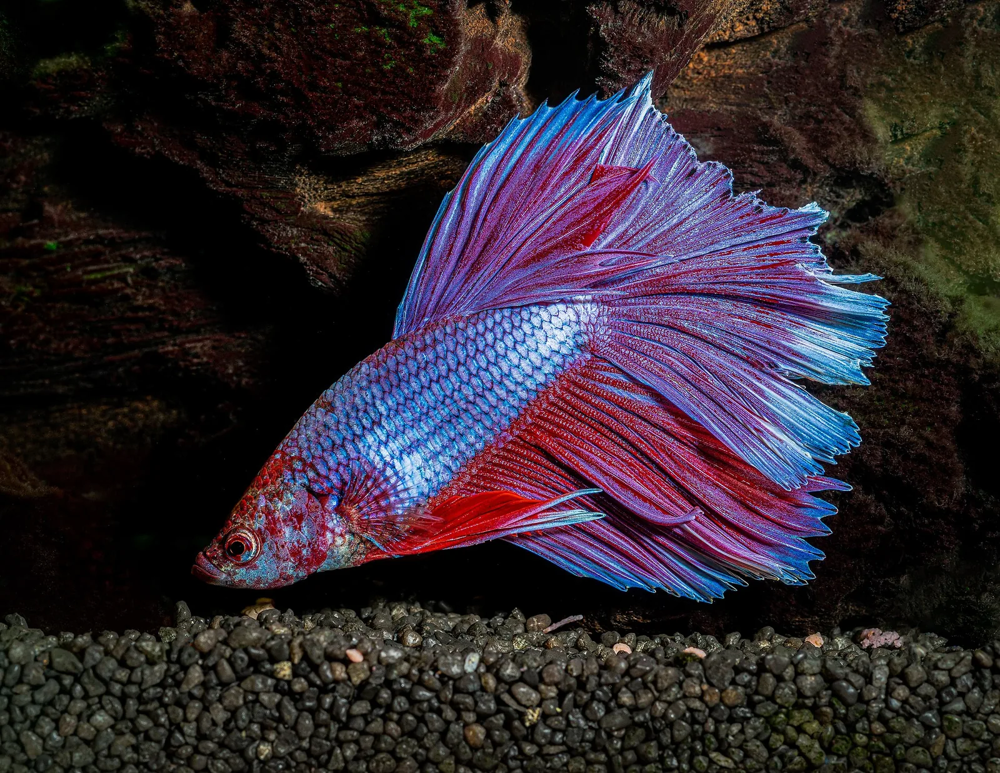
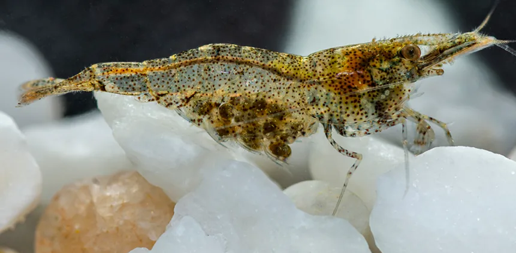
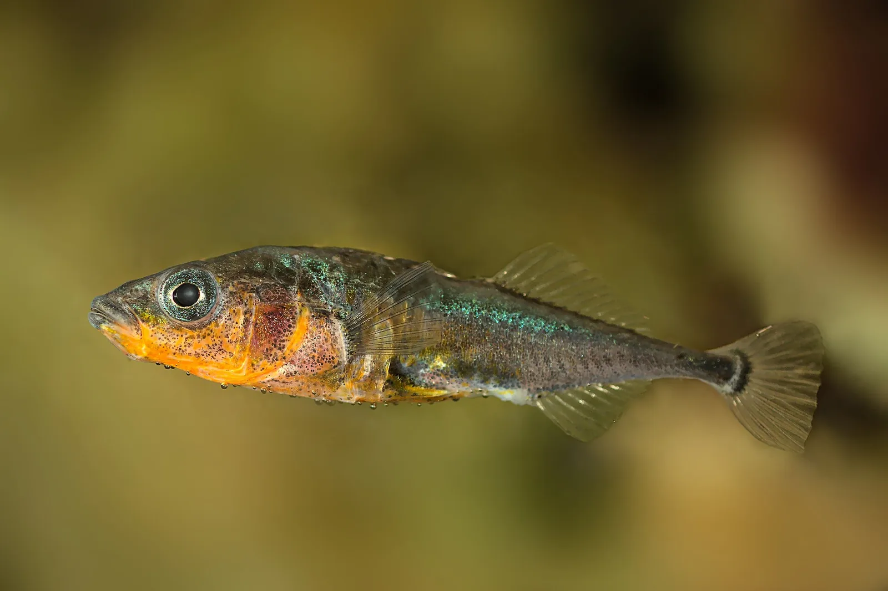
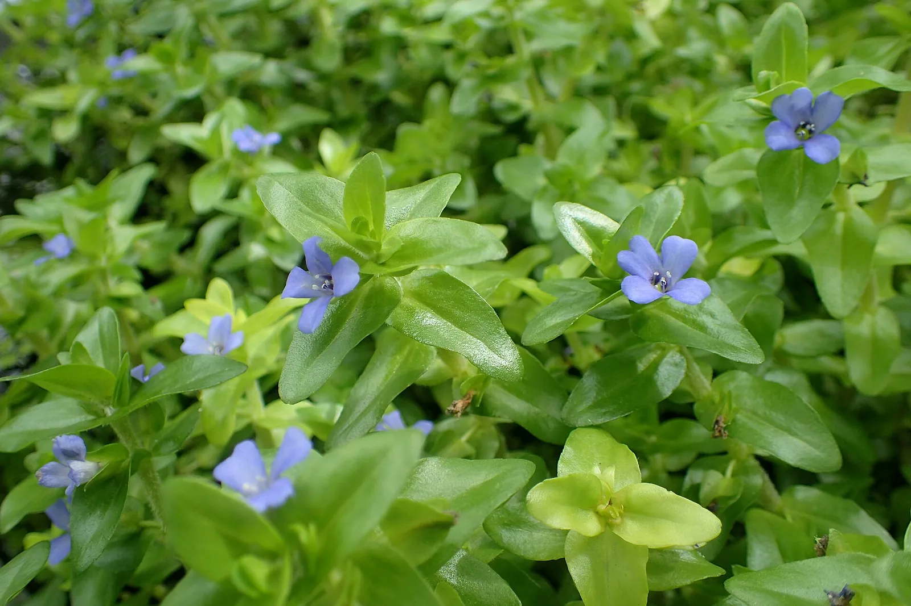

Replace evaporation with freshwater, not saltwater
Keep top-offs and water changes separate, and check the instrument and both water samples before adjusting salinity.
Read the storyUpdated
Earlier stories, newest first. Back to the latest edition.
Hobby news, species profiles and practical guides for freshwater tanks, ponds and reefs.
All stories · 22 stories · page 2 of 3 (11–20)
Keep top-offs and water changes separate, and check the instrument and both water samples before adjusting salinity.
Read the storyChoose light for the species you keep and where each one sits in the tank. A brighter fixture is not automatically a better match.
Read the storyCheck identity, eventual size, feeding risks and social behavior before buying a small juvenile.
Read the storyClear out leaves, shut down waterfalls and plan for a patch of open water before the pond freezes. Never hit the ice to break it.
Read the storyUse species and grower guidance to choose a position. Pump output alone doesn't tell you how the water moves at that spot.
Read the storyClear trapped debris but keep the established biological media, because the parts of a filter do different jobs.
Read the storyBreeding creates new genetic combinations. Growing fragments multiplies existing stock. Neither guarantees protection from bleaching.
Read the story Earlier researchUse the kit's method the same way each time, and keep a record that shows whether a change came from the water or from how you tested.
Read the storyYoung fish need prey of the right size and nutritional value. Hatcheries raise food organisms alongside the fish.
Read the story Earlier researchRemove the growing medium, then follow the species’ planting needs: hairgrass goes into substrate, while Anubias needs an exposed rhizome.
Read the storyIn Stanford lab trials, symbiotic algae crossed fused tissue into the bleached fragment. Pieces from different colonies fought instead.

A bleached coral can get its algae back from a healthy fragment of the same colony. In Science Advances on October 14, 2026, a Stanford team led by Danny Collins reported that brief contact lets the symbiotic algae pass through fused tissue into the bleached piece, which then recovers on its own.
In the first trial, all five bleached fragments that touched a healthy partner recovered within seven weeks, while the five kept a few millimeters away died. A single week of contact was enough, and in some cases three days. After a week the algae were doubling about every four days, up to ten times faster than most recovery recorded on reefs.
The tissue only fuses between corals of the same genet, so pairings of different colonies turned antagonistic. Stanford’s account notes that the method needs a healthy, genetically identical copy of every bleached coral, which isn’t feasible at reef scale, and the team plans to explore other ways of delivering the algae.
Background: October 14, 2026 (Science Advances; Stanford Doerr School of Sustainability) · Published November 1, 2026.
Original editorial writing for an independent design preview. Research and reporting dates are preserved above; earlier work is not presented as a new announcement. Product statements are attributed to their manufacturers. No store inventory or endorsement is implied.
The bacteria that make fish waste safe take weeks to build up. Start with a few fish, test often, and add more slowly.

A brand-new aquarium has clean water and almost none of the bacteria that make fish waste safe. Fish food is rich in protein, and fish release the resulting ammonia across their gills. UF/IFAS Extension explains that one group of nitrifying bacteria turns ammonia into nitrite and a second turns nitrite into nitrate, which is generally less toxic. Hobbyists call the wait for those bacteria to settle in cycling.
The Ornamental Aquatic Trade Association calls the result of rushing “new tank syndrome”: too few nitrifying bacteria for the waste, so ammonia and nitrite climb to levels that can make fish ill or kill them. Its advice is to raise the number of fish gradually, because the bacteria have to increase every time fish are added and feeding goes up.
Tank size helps too. The same UF/IFAS guide says larger aquariums are easier to work with than small ones and suggests about 30 gallons as a starter tank, big enough to dilute wastes while the system settles.
Background: Beginner guide; UF/IFAS VM144 August 2003 (archived); OATA care sheet, undated · Published November 1, 2026.
Original editorial writing for an independent design preview. Research and reporting dates are preserved above; earlier work is not presented as a new announcement. Product statements are attributed to their manufacturers. No store inventory or endorsement is implied.
Wild clownfish live in a few kinds of sea anemone, but they can be kept successfully without one. A pair needs about 16 gallons.

Most pictures of a clownfish include the anemone it is tucked into, so it is easy to assume a tank needs one. It doesn’t. The Ornamental Aquatic Trade Association’s care sheet says that although most clownfish live with anemones in the wild, anemones are not required to keep clownfish successfully in aquariums.
From the reef. The Florida Museum describes each clown anemonefish forming a relationship with a particular sea anemone, most often the magnificent sea anemone, Heteractis magnifica. The fish gets used to its host by brushing against the tentacles until its mucus protects it from the stings. The anemone shelters the fish and its nest, and may in turn benefit when the fish eats parasites and fans water through its tentacles.
The care sheet’s list is about water and space. Ammonia and nitrite should be at zero, and it recommends an aquarium of at least 60 liters (about 16 gallons) for a single pair of the smaller species, such as common or percula clownfish, and at least 120 liters (about 32 gallons) for larger species.
Then plan for a second animal. The association suggests asking about the setup needed to keep an anemone healthy and choosing a species your clownfish will live with.
Where the fish comes from matters as well. The Florida Museum notes that clown anemonefish are raised in aquaculture facilities, which reduces pressure on wild populations, and that over-collecting for the aquarium trade has hurt some local populations.
Background: OATA care sheet, undated; Florida Museum species profile, undated · Published November 1, 2026.
Original editorial writing for an independent design preview. Research and reporting dates are preserved above; earlier work is not presented as a new announcement. Product statements are attributed to their manufacturers. No store inventory or endorsement is implied.
These armored catfish sift the bottom and gulp air at the surface. Aqueon suggests 30 gallons and soft, rounded substrate.

The bronze corydoras, Corydoras aeneus, comes from South America east of the Andes, from Colombia and Trinidad south to the La Plata basin. FishBase describes it living mostly in quiet, shallow water over soft bottoms, with adults in schools of 20 to 30.
In the aquarium trade its albino form is just as familiar. Aqueon notes that an albino cory or one of its relatives is one of the first bottom feeders many aquarists buy.
Watch a group for a while and one will dart to the surface and back. Corydoras aeneus is a facultative air breather that takes air into its intestine, between once and 45 times an hour according to FishBase.
Aqueon calls the occasional trip normal, but says constant gasping at the surface can mean poor water quality or low oxygen.
Aqueon suggests a 30-gallon aquarium for most species, sand or fine gravel with rounded edges so the fish don’t damage their barbels while foraging, open space near the front and some cover. Captive-bred corydoras tolerate a wide range of water chemistry, but the guide insists on very clean water and says they should never go into a new or neglected aquarium.
Buy them as a group of five or more; different species often school together. Aqueon describes corys as active in the daytime, and warns that their fin spines are sharp and in some species carry a mild toxin, so handle them carefully.
FishBase lists the wild fish as nocturnal, so expect some evening activity too. It records worms, crustaceans, insects and plant matter in their natural diet; in a tank, that points to sinking foods that reach the bottom.
Background: Species profile; Aqueon care guide and FishBase, accessed November 1, 2026 · Published November 1, 2026.
Original editorial writing for an independent design preview. Research and reporting dates are preserved above; earlier work is not presented as a new announcement. Product statements are attributed to their manufacturers. No store inventory or endorsement is implied.
The claw shuts so fast that it shoots out a jet of water and a bubble. NOAA puts the bang at 183–210 decibels.

Some of the loudest animals on a reef are a couple of centimeters long, under an inch. Snapping shrimp, also called pistol shrimp, are a group of species with one oversized claw that can grow to half the size of the body. NOAA’s sanctuary scientists put their snaps at 183 to 210 decibels, which ranks them among the loudest sound makers in the ocean.
A team led by Michel Versluis filmed the claw of Alpheus heterochaelis at high speed while recording with a hydrophone, and reported in Science in 2000 that the sound comes from a bubble rather than the claw itself. The claw closes so fast that it fires a jet of water quick enough to make a cavitation bubble, and the snap is heard when that bubble collapses. The snap can stun or kill small prey.
Together, their snaps make the crackle divers hear, which NOAA compares to milk poured on Rice Krispies. Its listening project found snapping varies by place, season and time of day, generally rising as water warms. Researchers now track it as a possible sign of how well a damaged habitat is recovering.
Background: Earlier research: Science, September 22, 2000; NOAA Office of National Marine Sanctuaries, December 2021 · Published November 1, 2026.
Original editorial writing for an independent design preview. Research and reporting dates are preserved above; earlier work is not presented as a new announcement. Product statements are attributed to their manufacturers. No store inventory or endorsement is implied.
His 1852 jar experiment led to London’s zoo fish house in 1853 and a short-lived craze for parlour tanks.

On May 3, 1852, the naturalist Philip Henry Gosse put about three pints of seawater, some seaweeds and small sea animals into a confectioner’s show-glass about ten inches deep. He only topped it up to replace evaporation, yet the water stayed fresh and the animals healthy for more than two months, according to his son Edmund’s 1890 biography. The plants supplied oxygen in the light, a trick Gosse had already used in freshwater vases.
Others were close behind or ahead of him. The Horniman Museum notes that Robert Warington published the same finding about plants and animals living in balance, independently, in 1852, and that Sir John Dalyell had kept sea anemones alive for years in the 1820s by changing their seawater every day. Horniman also credits Gosse with coining the modern word aquarium.
In December 1852 Gosse began setting up a tank in the new Fish House at the Zoological Gardens in Regent’s Park, stocked with about two hundred animals and plants collected in Devon. Its popularity persuaded the Zoological Society to make the new aquarium a feature of the gardens.
His 1854 book, The Aquarium, sold “like wild-fire.” Its color plates showed sea creatures among rocks and weed as they would look in a tank, and its last chapter told readers how to set one up at home, from the tank’s size and shape to where to place it for light.
A craze followed. Horniman points to the 1845 repeal of the glass duty, which made plate glass cheaper, and London shops selling ready-made “parlour pond” tanks. The enthusiasm faded once many households found the tanks hard to look after. Public aquariums kept growing, though: the success of the zoo’s fish house, which opened in 1853, led to others in Britain, Europe and the United States over the next two decades.
Background: History: 1852–1871; Devon and Exeter Institution, 2020; Horniman Museum, March 15, 2014 · Published November 1, 2026.
Original editorial writing for an independent design preview. Research and reporting dates are preserved above; earlier work is not presented as a new announcement. Product statements are attributed to their manufacturers. No store inventory or endorsement is implied.
A Hawaiʻi Pacific University team tracked one cohort of larvae for 76 days. Gut microbes shifted with each new food.

Hatcheries raising sought-after reef fish such as the yellow tang struggle to get enough larvae through to the juvenile stage. A study published in PeerJ on September 21, 2026, looked at one part of that early stage: the microbes in the gut. Researchers at Hawaiʻi Pacific University and its Oceanic Institute followed a single cohort in a recirculating system from hatching to 76 days, sampling the larvae, their food and the rearing water at eight points.
The gut community changed with each stage of development, and its biggest swings lined up with changes in food. Bacteria of the genus Vibrio made up 97.2% of the gut sequences at 36 days and 94.2% at 55 days. Both peaks came when enriched Artemia brine shrimp were added to the diet.
These are proportions from one cohort in one system. They show a timing pattern and do not establish a cause or any effect on the fish’s health. The authors say live foods may shape a young fish’s microbes and that the Vibrio species carried in feed need closer study.
Background: September 21, 2026 (PeerJ); October 7, 2026 (Hawaiʻi Pacific University) · Published November 1, 2026.
Original editorial writing for an independent design preview. Research and reporting dates are preserved above; earlier work is not presented as a new announcement. Product statements are attributed to their manufacturers. No store inventory or endorsement is implied.
Two 2024 studies found more swimming and less hovering in bigger, furnished tanks. Male bettas still need a tank each, however large.

Male bettas usually reach stores in small plastic cups, and many go home to a bowl. Two studies published in 2024 asked whether that much room is enough. Both found that bettas behaved differently once they had more space and something to swim around.
Ronald Oldfield and Emily Klerekoper Murphy watched single males in a 0.5-liter bowl (about 0.13 gallon) and in aquariums of 10, 38 and 208 liters (about 2.6, 10 and 55 gallons). The fish swam less in the bowl. The authors concluded that a betta needs at least a 10-liter (2.6-gallon) tank to show its full range of swimming, and fish swam more often when the container held gravel, rocks and live plants.
Naomi Clark-Shen and colleagues moved 13 males through five setups, from a 1.5-liter jar to 19.3-liter tanks (about 0.4 to 5.1 gallons). In the large furnished tank the fish were more active and spent less time resting, hovering or swimming in repeated patterns. A large tank with no gravel, plants or hiding places produced more of those abnormal behaviors than the furnished one. The team suggested 5.6 liters (about 1.5 gallons) as the least a store should use for display and sale, and a bigger tank at home.
A 2019 UF/IFAS Extension publication takes another view. It argues that domestic male bettas, which evolved in shallow, warm water, do well in small aquariums and bowls when water quality, nutrition and health care are looked after, and it cites a Thai study in which males grew better in 150 milliliters (about 5 fluid ounces) than in 300. That work measured growth, while the 2024 studies measured behavior, which may account for some of the disagreement.
UF/IFAS notes that bettas do poorly in cold water. If one lives in an unheated, unfiltered container, the room should stay at 71.6°F or warmer. Bettas prefer calm water, and UF/IFAS cautions that heavy filtration may harm them. Dry commercial foods can be the whole diet, and live or frozen foods are an option on top.
Keep males apart. In Oldfield and Klerekoper Murphy’s pair trials, bigger planted tanks reduced approaches and displays between two males but not attacks, and the authors found that even very large aquariums could not guarantee the pair would live peacefully. The largest they tested held 378 liters, about 100 gallons.
Background: Species profile; studies published 2024; UF/IFAS March 2019 · Published November 1, 2026.
Original editorial writing for an independent design preview. Research and reporting dates are preserved above; earlier work is not presented as a new announcement. Product statements are attributed to their manufacturers. No store inventory or endorsement is implied.
The first transfer carried 130 genotypes, giving the coral gene bank another location for its living collection.

The important number is not just how many corals moved, but how many different genetic identities went with them. In its August 20, 2026 announcement, Coral Restoration Foundation reported transferring approximately 1,000 corals representing 130 genotypes from Tavernier Nursery to Elbow Nursery in the Florida Keys. Two dives began a planned relocation of roughly 3,500 corals, intended to duplicate the genetic collection held at Tavernier.
A genotype is not a species count. Coral propagation can produce multiple colonies with the same genetic identity: a fragment grows, but it does not become a new genetic individual simply by living separately. Banking living corals therefore means preserving different lineages, not merely accumulating more pieces. Sexual reproduction, by contrast, can produce new combinations of parental genes.
The first transfer prioritized founding staghorn and elkhorn genotypes and much of CRF’s Orbicella collection. Elbow adds an ocean-based backup alongside Tavernier, complementing land-based banking at The Reef Institute. CRF reports stronger water movement at Elbow, but does not yet know whether relocated corals will withstand heat as successfully as some corals already living nearby.
This is also why a gene bank and a restored reef are different achievements. NOAA describes genetic storage as a reserve for future restoration, alongside breeding and outplanting. Keeping a lineage alive preserves the possibility of using it later; it does not establish that a self-sustaining population has returned to the reef.
The August announcement made further transfers dependent on heat and reef conditions. It did not report all 3,500 corals in place. Maintenance and monitoring follow the move: the immediate accomplishment is a second location for vulnerable genetic stock, not a guarantee against the next bleaching event.
Background: August 20, 2026 · Published November 1, 2026.
Original editorial writing for an independent design preview. Research and reporting dates are preserved above; earlier work is not presented as a new announcement. Product statements are attributed to their manufacturers. No store inventory or endorsement is implied.
A ZooKeys review now counts 21 Caridina species in the region, almost half found nowhere else. Its authors ask for protection of streamside plants.

Southern Thailand has five more named freshwater shrimp. In ZooKeys on September 15, 2026, Kongkit Macharoenboon and five co-authors described Caridina kuehnei, C. nangroma, C. srivijaya, C. takkola and C. tambralinga, after field surveys across the region’s rivers and streams.
Caridina shrimp can look alike, and individuals of one species can vary a lot, so the team paired body measurements with DNA from two mitochondrial genes. The tree showed 18 lineages. With older records added, the region now has 21 known Caridina species, and almost half of them are endemic.
The paper’s conservation section names habitat loss and overharvesting for the ornamental pet trade as threats to many Caridina species. In Thailand, the authors saw stream banks being lined with concrete and riprap, which removes the riverside plants several species live among. They single out landlocked species with tiny ranges, including the new C. kuehnei and C. srivijaya, as needing particular attention.
Background: September 15, 2026 (ZooKeys) · Published November 1, 2026.
Original editorial writing for an independent design preview. Research and reporting dates are preserved above; earlier work is not presented as a new announcement. Product statements are attributed to their manufacturers. No store inventory or endorsement is implied.
Keep top-offs and water changes separate, and check the instrument and both water samples before adjusting salinity.

Evaporation removes water while leaving salt behind. Replace that loss with suitable freshwater, not another batch of saltwater. UF/IFAS specifies fresh reverse-osmosis water for this job. A water change is different: you deliberately remove aquarium water, including its dissolved salt, and replace it with prepared saltwater. Do not treat these two jobs as interchangeable bucket refills.
Red Sea recommends testing both the aquarium and newly mixed water before a change, and bringing dissolved replacement water to the aquarium's temperature. Follow your salt's mixing and storage instructions; one formulation's timings are not a universal recipe.
Our suggestion: label containers by purpose, not merely by color. Write “freshwater top-off” or “prepared saltwater,” plus the preparation date. Keep the test record with the batch. If salinity is unexpectedly wrong, pause routine maintenance and establish a tank-specific correction plan; this guide does not prescribe a universal correction dose or speed.
Background: Evergreen guide · Published November 1, 2026.
Original editorial writing for an independent design preview. Research and reporting dates are preserved above; earlier work is not presented as a new announcement. Product statements are attributed to their manufacturers. No store inventory or endorsement is implied.
Choose light for the species you keep and where each one sits in the tank. A brighter fixture is not automatically a better match.

Before turning up the light, make a plant list. Do you want a few leafy accents on wood, an open foreground, or a carpet? Put each plant's requirements beside its name. The equipment decision becomes much easier to think about when you know what you want it to grow.
Two compact plants can ask quite different things of a tank. Tropica rates Anubias barteri nana as low in light demand, while its Eleocharis pusilla 'Mini' has a medium rating. Both can suit a small layout; they are not interchangeable lighting projects. The useful question is not whether a plant looks beginner-friendly, but what its individual care information says.
Watts tell you about electricity use, not a directly comparable amount of light across different technologies. Tropica's lighting guide makes that distinction and offers lumen-per-liter bands as a starting point. It also says those recommendations grew out of experience with T5 fluorescent lighting. Treat them as a grower's guide, not a measurement of what reaches a particular leaf under your LED.
For a closer look, an underwater PAR meter measures the light arriving at a planting position. Its reading is called photosynthetic photon flux density: how many photons arrive per unit of area and time in the conventional 400–700-nanometer range. Apogee's documentation explains why the sensor must also account for the immersion effect. Use a meter intended or correctly configured for underwater measurements; waterproofing a sensor alone is not enough.
Our practical preference is to keep a small lighting log: plant names, fixture setting, on-and-off times, and a photograph from the same position. Write down what you change rather than relying on how bright the tank looked last weekend. If you are comparing settings, resist changing the whole arrangement at once. Give yourself a record you can actually interpret.
And leave room for a modest ambition. A few well-chosen plants around a piece of wood can be the finished design, not an unfinished version of a carpeted aquascape. Choose the aquarium you want to live with, then choose its light.
Background: Evergreen guide · Published November 1, 2026.
Original editorial writing for an independent design preview. Research and reporting dates are preserved above; earlier work is not presented as a new announcement. Product statements are attributed to their manufacturers. No store inventory or endorsement is implied.
Check identity, eventual size, feeding risks and social behavior before buying a small juvenile.

Before buying a marine fish, write a plan for its adult life rather than its current display size. Start with the scientific name, expected adult dimensions and the animals already living in your tank. Our recommendation is to leave unresolved questions on paper instead of bringing them home in a fish bag.
NOAA's account of red lionfish and devil firefish notes that juveniles can measure an inch or less while adults can reach 18 inches. That contrast is a reason to research the species before purchase, not a formula for calculating tank volume. Ask an experienced marine keeper to assess your tank's dimensions and layout for the adult animal; “I will upgrade later” is not an existing home. Lionfish also have venomous spines; they are examples here, not a beginner stocking recommendation.
Florida Museum identifies its blue tang as Acanthurus coeruleus. It reports a length of approximately 12 inches and describes wild individuals living alone, in pairs or in groups, with reef crevices used as nighttime shelter. Those observations do not establish that several will share your aquarium successfully. A photograph of wild schooling is not a tested captive stocking plan.
Predation is a separate compatibility question from chasing. Georgia Aquarium lists small fish, shrimp, crabs and other invertebrates in the red lionfish's diet and describes it as a solitary hunter. It also reports that adults defend their home range against other lionfish and other species. Our takeaway is to assess potential prey as well as potential rivals. A quiet fish is not necessarily a safe neighbor for every smaller resident.
Do not buy a fish merely to fill an empty visual space. If adult housing or compatibility remains uncertain, keep it off the purchase list. These examples explain what to investigate; they do not endorse a particular pairing, group size or minimum tank volume.
Background: Evergreen guide · Published November 1, 2026.
Original editorial writing for an independent design preview. Research and reporting dates are preserved above; earlier work is not presented as a new announcement. Product statements are attributed to their manufacturers. No store inventory or endorsement is implied.
Clear out leaves, shut down waterfalls and plan for a patch of open water before the pond freezes. Never hit the ice to break it.
Fish in a backyard pond get through a cold winter on the oxygen already in the water. Penn State Extension explains how that supply runs short. Ice stops oxygen moving in from the air, snow on the ice cuts the light that plants and algae need to make more, and rotting leaves and plants on the bottom keep using it up. Fish lost this way are called winterkill, and Penn State notes that a bottom covered in leaves and dead plants makes it more likely.
Penn State’s advice is written for farm ponds and small lakes. It suggests running an aeration system once ice forms and leaving it off while the pond is open. Garden ponds differ a great deal in depth, size and stocking, so use these steps as a checklist and follow the instructions for your own equipment.
Penn State also suggests keeping about 30% of the ice free of lasting snow so light reaches the water, but only where the ice is safe to work on.
If you clean the pond before winter, K-State advises against power-washing the liner. The film on its sides is home to useful microorganisms.
Background: Seasonal guide; Penn State Extension updated May 19, 2025; K-State June 2010 · Published November 1, 2026.
Original editorial writing for an independent design preview. Research and reporting dates are preserved above; earlier work is not presented as a new announcement. Product statements are attributed to their manufacturers. No store inventory or endorsement is implied.
Use species and grower guidance to choose a position. Pump output alone doesn't tell you how the water moves at that spot.

Choose a coral's position from its care requirements and the flow at that location, not a single tank-wide turnover target. EcoTech Marine identifies livestock, rockwork, aquarium size, pump placement and other flow sources as factors in choosing a pump mode. Our practical conclusion: a pump specification is a starting point, not a placement map.
ORA describes its Duncanopsammia axifuga as an LPS coral and recommends moderate-to-strong flow, medium-to-high lighting and a middle-to-upper position. The page concerns ORA's particular cultured Duncan, including its tightly clustered growth form. It is useful starting information for that stock, not permission to assign every large-polyp coral the same place.
For its Montipora setosa, an SPS coral, ORA instead lists low-to-moderate flow and bottom-to-middle placement, again with medium-to-high lighting. The grower describes tolerance of a range of conditions. Taken together, these examples show why “SPS means strongest flow” and “LPS means weakest flow” are inadequate purchasing instructions. Ask for the actual coral's care information rather than stopping at its broad hobby category.
Treat the record as an ongoing husbandry conversation, not proof that the first placement is correct. If the coral appears unwell, describe the observations and seek species-specific help rather than repeatedly increasing pump power. This guide deliberately supplies neither a universal turnover number nor a promise that one setting suits every colony.
Background: Evergreen guide · Published November 1, 2026.
Original editorial writing for an independent design preview. Research and reporting dates are preserved above; earlier work is not presented as a new announcement. Product statements are attributed to their manufacturers. No store inventory or endorsement is implied.
Clear trapped debris but keep the established biological media, because the parts of a filter do different jobs.


Clean a filter to remove accumulated waste, not to make every surface look new. Biological filtration depends on bacteria living on filter surfaces. Their work changes ammonia into nitrite and then nitrate; mechanical filtration instead catches particles. One piece of sponge can do both jobs, so identify what you are handling before deciding to discard it.
Use a dedicated aquarium bucket. Lightly rinse established media in removed tank water, rather than untreated chlorinated tap water, and avoid soap or detergent. The aim is to dislodge the obstruction without aggressively stripping the surfaces supporting beneficial bacteria.
Unplug the filter before opening it, then follow its manual for access and reassembly. Return the media and restart once the aquarium is refilled appropriately. Check basket order against the manual.
Record the date, the part cleaned, any part replaced, and whether the outlet flow returned to its usual appearance. A note saying “intake sponge rinsed” is more useful next time than “filter done.” Photograph unfamiliar basket arrangements before taking them apart.
Do not turn that record into one cleaning deadline for every filter. Media roles and equipment differ. Nor does filter servicing replace partial water changes. Keep those as separate entries in your maintenance record so neither task disappears behind the other.
See it in 3D: Inside a Bio-Wheel Filter, a 3D look at a filter’s biological stage.
Background: Evergreen guide · Published November 1, 2026.
Original editorial writing for an independent design preview. Research and reporting dates are preserved above; earlier work is not presented as a new announcement. Product statements are attributed to their manufacturers. No store inventory or endorsement is implied.
Breeding creates new genetic combinations. Growing fragments multiplies existing stock. Neither guarantees protection from bleaching.
A fragment can grow into another coral colony without creating another genetic identity. Sexual reproduction does something different: eggs and sperm combine, producing offspring with new combinations of genes. That distinction matters whenever a restoration project counts its corals. More colonies and more genetic variety are not interchangeable measures of progress.
Broadcast-spawning corals release eggs and sperm into the water. Their timing helps gametes from separated colonies meet; temperature, lunar cycles and light contribute to that coordination. After fertilization, embryos develop into swimming larvae called planulae. A suitable surface and settlement cues help a larva make the transition to an attached polyp. Brooding corals take a different route: fertilization and early development occur inside the parent before larvae are released.
For restoration, producing larvae is therefore an opening, not the finish. Young corals must survive settlement and early growth. Miller and colleagues’ 2024 research paper describes this period as particularly vulnerable to competition, predation and disease. A successful spawning night can supply a new generation; it cannot by itself deliver a reef of adult colonies.
NOAA’s July 21, 2025 account of Florida restoration describes an effort to breed genetically varied offspring while selecting parents for heat tolerance. Researchers were also testing beneficial algae and bacteria, and developing protective hydrogel capsules to support larval settlement. These are separate problems: which parents to cross, which microbial partners to establish, and how to keep tiny corals alive. A promising answer to one does not settle the others.
There is encouraging field evidence, with an important qualification. Miller’s team surveyed sexually propagated corals across five Caribbean regions during the 2023 heatwave. Many young corals resisted bleaching better than comparison colonies. But the study was observational, with uneven comparisons across species and sites; it did not establish the mechanism responsible. An older cohort of sexually propagated elkhorn corals suffered badly. The authors warned that the resistance seen in juveniles could diminish with age. Sexual origin alone is not evidence of lifelong heat protection.
NOAA’s program still includes growing fragments from bleaching survivors. Fragmentation can multiply existing stock; breeding can generate new genetic combinations. Neither makes environmental conditions irrelevant. The 2024 study explicitly places restoration alongside the need to address warming and local pollution, not in place of that work.
Ask what was achieved: more fragments, more parent lineages, successful settlement, or surviving adults? Those are different accomplishments. Keeping the distinction visible lets us welcome real progress without asking a baby coral to stand in for a recovered reef.
Background: July 21, 2025 · Published November 1, 2026.
Original editorial writing for an independent design preview. Research and reporting dates are preserved above; earlier work is not presented as a new announcement. Product statements are attributed to their manufacturers. No store inventory or endorsement is implied.
Use the kit's method the same way each time, and keep a record that shows whether a change came from the water or from how you tested.

Write down the result, its units and what was happening in the aquarium. “Water fine” cannot be compared with next week's result. A useful record lets you see both the measurement and the circumstances, without pretending a color match is more precise than it really is.
Read the instructions for the specific test, not just the kit's name. API distinguishes vigorously mixing designated reagent bottles from more gently mixing capped test tubes. It also advises rinsing tubes promptly after testing. Do not assume every bottle needs identical handling or borrow another kit's sequence.
Check expiry information and note when reagents were opened. Measure the specified sample volume and time each required wait. Use the instructed viewing arrangement and suitable light; colored aquarium lighting is not a neutral comparison setting. Contamination, incorrect quantities and reading at the wrong time can all distort the result.
For example, an entry can say “between these two chart colors” rather than inventing an extra decimal place. If you change kits, mark that change: tests can use different scale intervals, so two readings need not align perfectly. Substantial disagreement warrants checking the method rather than choosing the more reassuring number.
Monitor ammonia, nitrite and nitrate alongside pH and temperature. Increase attention during establishment rather than treating a new tank like an established one. Testing helps assess filtration and husbandry; it is not merely a check on how clear the water looks.
Use species-specific requirements when interpreting pH, not a universal freshwater target. API also warns that ammonia and nitrite matter even at low levels. An unexpected reading deserves prompt investigation; a tidy log is useful evidence, not permission to ignore a possible water-quality problem.
Background: Evergreen guide · Published November 1, 2026.
Original editorial writing for an independent design preview. Research and reporting dates are preserved above; earlier work is not presented as a new announcement. Product statements are attributed to their manufacturers. No store inventory or endorsement is implied.
Young fish need prey of the right size and nutritional value. Hatcheries raise food organisms alongside the fish.
A breeder can have eggs, clean water and attentive care, yet still be missing the meal that makes the next stage possible. For marine fish larvae, food must fit a tiny mouth, trigger a hunting response and deliver the right nutrients. A tank full of unsuitable prey is not a nursery full of fed fish.
That problem sits behind the University of Florida’s February 25, 2025 account of ornamental-fish research. Its teams had raised blue tangs in captivity, but the achievement depended partly on learning to grow the live foods larvae needed at different stages. The university described a practical ambition: develop methods that fish farmers could use, rather than leave each producer to solve the life cycle alone.
Clownfish offer a useful contrast. Their eggs adhere to a surface, which can be a tile or clay pot in a breeding system; the male tends the nest. The larvae hatch relatively well developed and can take enriched rotifers as their first food. Many pelagic spawners release buoyant eggs and hatch less-developed larvae that need smaller prey. The successful clownfish routine is not a universal recipe.
Even that contrast has exceptions. UF/IFAS notes that damselfishes also lay eggs on surfaces and provide parental care, yet their larvae often need small copepod nauplii. Watching where a fish lays its eggs cannot tell a breeder everything about what will hatch. The larva’s capabilities matter as much as the parents’ behavior.
Rotifers are useful because they can be grown densely, but breeders enrich them to improve their nutritional value. Brine shrimp are convenient to hatch, yet can be too large for the earliest feeding stage. Copepod nauplii offer another combination of size, movement and nutrition; maintaining their supply brings its own culture challenges. The hatchery is managing food organisms as well as fish.
This explains why a first breeding success and dependable production are different milestones. UF’s account describes intensive labor and cost in developing larval diets and environments. A farmer needs a method that can be repeated, not simply evidence that one batch once survived. The research is about making that passage less precarious.
Captive breeding can offer an alternative to collecting fish, but UF’s account also acknowledges uncertainty about wild harvest’s effects. Our editorial view is to ask for a traceable origin rather than turn that uncertainty into a blanket verdict on every wild fish. Nor should a sourcing decision be mistaken for habitat protection. Appreciating the work of a hatchery and caring about living reefs belong in the same conversation.
Background: February 25, 2025 · Published November 1, 2026.
Original editorial writing for an independent design preview. Research and reporting dates are preserved above; earlier work is not presented as a new announcement. Product statements are attributed to their manufacturers. No store inventory or endorsement is implied.
Remove the growing medium, then follow the species’ planting needs: hairgrass goes into substrate, while Anubias needs an exposed rhizome.

Tropica’s 1-2-Grow cups contain young plants for dividing into portions, not a finished planting to tip straight into an aquarium.
Read the species label first. Anubias barteri nana and Eleocharis pusilla 'Mini' both come in tissue-culture cups, but their destinations differ: Tropica recommends stone or wood for the Anubias, while the Eleocharis is a foreground carpeting plant. The grower also rates the latter's light and CO2 demand as medium, versus low for the Anubias. A shared package is not a shared care plan.
Keep the cup sealed until you are ready to work. That is Dennerle Plants' handling instruction for its Plantit range. Our preparation suggestion: set out tweezers, a small work surface and your planting plan first, so you are not hunting for tools with the plant already out of its container.
Ease the plant material out, then rinse away the liquid or gel around it. Dennerle specifies lukewarm water and a gentle touch; Tropica likewise instructs users to rinse off the medium under the tap. Follow the cup's own directions. The job is to remove the growing medium, not scrub the small plants clean with force.
Tropica suggests six to eight portions for small foreground plants, planted with tweezers—not a rule for every species. Its Eleocharis guidance calls for small portions spaced across the planting area. Let the carpet grow rather than installing one solid plug.
Anubias needs a different finish. Attach it to suitable stone or wood rather than treating it like a grass tuft. Tropica warns against burying its rhizome—the thick stem from which the plant grows—because it can rot. Choose the planting method from the species information, even when the cup's general instructions show tweezers pushing plants into substrate.
If a substrate-planted portion keeps floating up, Dennerle suggests checking whether it is too large and dividing it further. For a new setup, the grower recommends planting with little or no water, then filling slowly without disturbing the substrate. That is a setup technique, not a reason to drain an occupied tank.
Tropica guarantees its own 1-2-Grow range is free of snails, algae and pesticides. That manufacturer statement is not an independent test of every tissue-culture product, nor a promise that an aquarium will remain algae-free after planting.
Background: Evergreen guide · Published November 1, 2026.
Original editorial writing for an independent design preview. Research and reporting dates are preserved above; earlier work is not presented as a new announcement. Product statements are attributed to their manufacturers. No store inventory or endorsement is implied.
The advantage depended on the conditions: larger groups in clear water could respond more slowly when tightly coordinated.

Picture a group of fish drawing closer together, their bodies pointing the same way. It is tempting to call that better teamwork. A University of Bristol study published on September 2, 2026, offers a more interesting answer: whether coordination helped depended on the water and the group. The subjects were three-spined sticklebacks, not a mixed community of aquarium fish.
Bristol reports that in cloudy water the fish generally moved closer and aligned more strongly before food appeared. Small groups were especially responsive to nearby fish. When the feeding opportunity arrived, however, cloudiness still slowed the response overall. The fish had adjusted their behavior; they had not made reduced visibility irrelevant.
The paper puts numbers on that movement. Researchers examined the fishes' positions and orientations in the second before the food stimulus appeared. They also compared changes in swimming speed between neighbors during the preceding minute. In pairs in turbid water, fish responded to a neighbor's speed changes with less delay than in clear water; that difference was not evident in larger groups.
In small groups in turbid water, closer spacing and stronger alignment were associated with quicker attacks on the food stimulus. In larger groups in clear water, those same features were associated with slower responses. Cohesion describes how tightly the fish gather; polarization describes how similarly they orient. The study therefore separates two things a casual glance might bundle together as schooling.
For us, the intriguing part is the reversal: a neat formation is not automatically the most effective one. This is an invitation to observe more carefully, not to cloud a home aquarium or add fish to reproduce a laboratory result. The experiment does not establish a stocking rule or a welfare score for aquarium species.
Background: September 2, 2026 · Published November 1, 2026.
Original editorial writing for an independent design preview. Research and reporting dates are preserved above; earlier work is not presented as a new announcement. Product statements are attributed to their manufacturers. No store inventory or endorsement is implied.
Keep useful cuttings, thin crowded growth and renew weakened stems instead of repeatedly shortening the same dense patch.

For a suitable stem plant, cut the longest shoot just above a lower leaf and replant the removed shoot within the group. The rooted stem can produce new shoots. Work in small sessions rather than treating every plant in the aquarium to one severe haircut; different growth forms need different trimming methods.
This Bacopa can be propagated by taking a side shoot and planting it in the substrate. Tropica describes it as relatively slow-growing for a stem plant. That makes it a useful reminder to judge the individual plant rather than assume every stem group needs frequent cutting.
There is no need to give all the groups matching heights or matching appointments in the calendar. Make the next session a response to the plants in front of you, not an obligation to repeat the last haircut.
Background: Evergreen guide · Published November 1, 2026.
Original editorial writing for an independent design preview. Research and reporting dates are preserved above; earlier work is not presented as a new announcement. Product statements are attributed to their manufacturers. No store inventory or endorsement is implied.
In Stanford lab trials, symbiotic algae crossed fused tissue into the bleached fragment. Pieces from different colonies fought instead.
Read the storyThe bacteria that make fish waste safe take weeks to build up. Start with a few fish, test often, and add more slowly.
Read the storyReef & oceanWild clownfish live in a few kinds of sea anemone, but they can be kept successfully without one. A pair needs about 16 gallons.
Read the storyThese armored catfish sift the bottom and gulp air at the surface. Aqueon suggests 30 gallons and soft, rounded substrate.
Read the storyReef & oceanThe claw shuts so fast that it shoots out a jet of water and a bubble. NOAA puts the bang at 183–210 decibels.
Read the story Earlier researchHis 1852 jar experiment led to London’s zoo fish house in 1853 and a short-lived craze for parlour tanks.
Read the storyA Hawaiʻi Pacific University team tracked one cohort of larvae for 76 days. Gut microbes shifted with each new food.
Read the storyTwo 2024 studies found more swimming and less hovering in bigger, furnished tanks. Male bettas still need a tank each, however large.
Read the storyReef & oceanThe first transfer carried 130 genotypes, giving the coral gene bank another location for its living collection.
Read the storyA ZooKeys review now counts 21 Caridina species in the region, almost half found nowhere else. Its authors ask for protection of streamside plants.
Read the storyReef & oceanKeep top-offs and water changes separate, and check the instrument and both water samples before adjusting salinity.
Read the storyFreshwaterChoose light for the species you keep and where each one sits in the tank. A brighter fixture is not automatically a better match.
Read the storyReef & oceanCheck identity, eventual size, feeding risks and social behavior before buying a small juvenile.
Read the storyClear out leaves, shut down waterfalls and plan for a patch of open water before the pond freezes. Never hit the ice to break it.
Read the storyReef & oceanUse species and grower guidance to choose a position. Pump output alone doesn't tell you how the water moves at that spot.
Read the storyFreshwaterClear trapped debris but keep the established biological media, because the parts of a filter do different jobs.
Read the storyBreeding creates new genetic combinations. Growing fragments multiplies existing stock. Neither guarantees protection from bleaching.
Read the story Earlier researchFreshwaterUse the kit's method the same way each time, and keep a record that shows whether a change came from the water or from how you tested.
Read the storyYoung fish need prey of the right size and nutritional value. Hatcheries raise food organisms alongside the fish.
Read the story Earlier researchFreshwaterRemove the growing medium, then follow the species’ planting needs: hairgrass goes into substrate, while Anubias needs an exposed rhizome.
Read the storyThe advantage depended on the conditions: larger groups in clear water could respond more slowly when tightly coordinated.
Read the storyKeep useful cuttings, thin crowded growth and renew weakened stems instead of repeatedly shortening the same dense patch.
Read the story